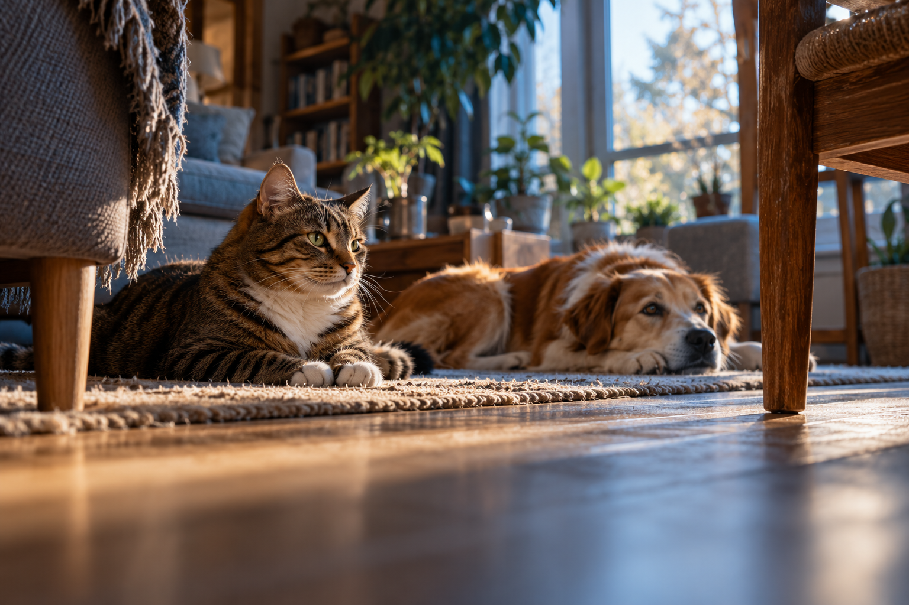

房间与叙事
同一空间、同一事件、同一“体验—解释—调整—重看”过程。
面向猫与狗主人的感知体验。共用一个空间与故事骨架，为不同动物保留不同的信息和选择。

基于动物感知与行为研究的桌面第一人称体验，探索未来 VR 的交互构想。Camp 重点是体验表达、可执行选择和清晰的证据边界，不是证明长期照护效果。
可以共享的是设计问题：我能获得什么信息？我能去哪里？我能否选择接近或离开？不能共享的是未经验证的感官数值与情绪结论。
同一空间、同一事件、同一“体验—解释—调整—重看”过程。
通过藏身处、退避路线和人的接近方式，呈现空间中的选择。
通过声源、离开声源的路径与局部嗅闻线索，呈现注意重点。
以上为原型架构建议，不是猫狗行为的固定分类；猫也会探索和响应声音，狗也需要退避与选择。